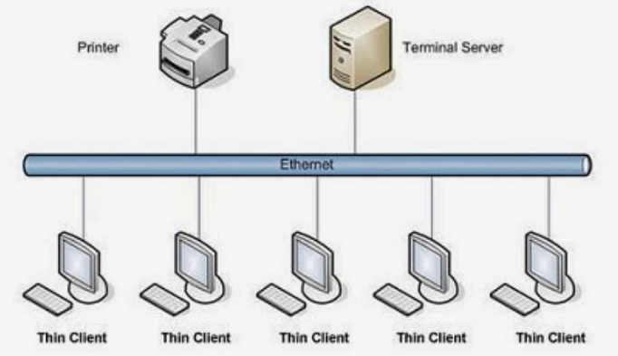

La computación paralela es una forma de cómputo en la que muchas instrucciones se ejecutan simultáneamente, operando sobre
el principio de que problemas grandes, a menudo se pueden dividir en unos más pequeños, que luego son resueltos simultáneamente
(en paralelo). Hay varias formas diferentes de computación paralela: paralelismo a nivel de bit, paralelismo a nivel de
instrucción, paralelismo de datos y paralelismo de tareas. El paralelismo se ha empleado durante muchos años, sobre todo
en la computación de altas prestaciones, pero el interés en ella ha crecido últimamente debido a las limitaciones físicas
que impiden el aumento de la frecuencia. Como el consumo de energía y por consiguiente la generación de calor de las
computadoras constituye una preocupación en los últimos años, la computación en paralelo se ha convertido en el paradigma
dominante en la arquitectura de computadores, principalmente en forma de procesadores multinúcleo.
Las computadoras paralelas pueden clasificarse según el nivel de paralelismo que admite su hardware: equipos con procesadores
multinúcleo y multi-procesador que tienen múltiples elementos de procesamiento dentro de una sola máquina y los clústeres,
MPPS y grids que utilizan varios equipos para trabajar en la misma tarea. Muchas veces, para acelerar la tareas específicas,
se utilizan arquitecturas especializadas de computación en paralelo junto a procesadores tradicionales.

Aspectos a considerar
Aspectos:
Diseño de computadores paralelo: Escalabilidad y Comunicaciones.
Diseño de algoritmos eficientes: No hay ganancia si los algoritmos no se diseñan adecuadamente.
Métodos para evaluar los algoritmos paralelos: ¿Cómo de rápido se puede resolver un problema usando una máquina paralela?
¿Con qué eficiencia se usan esos procesadores?.
Lenguajes para computadores paralelos, flexibles para permitir una implementación eficiente y que sean fáciles de programar.